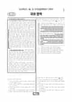

문제지

전국연합학력평가 · 시·도교육청 주관
2024년 3월 고3 학력평가 국어 화법과작문 1등급컷은 원점수 86점(추정), 표준점수 최고점은 150점입니다.
원점수 1등급컷은 공식 발표값이 아니라 EBSi·입시기관 값입니다. 등급별 값은 등급컷 표, 출처 구분은 데이터 원칙에 있습니다.

시험지를 먼저 풀어 보세요. 등급컷·표준점수·난이도는 흐리게 가려 뒀어요.
| 등급 | 원점수 | 표준점수 | 백분위 | 누적 |
|---|---|---|---|---|
| 1 | 86 | 133 | 96 | 4.49% |
| 2 | 79 | 125 | 89 | 11.9% |
| 3 | 70 | 116 | 77 | 24.13% |
| 4 | 60 | 106 | 59 | 41.54% |
| 5 | 49 | 95 | 40 | 61.34% |
| 6 | 39 | 84 | 23 | 77.74% |
| 7 | 28 | 73 | 11 | 89.26% |
| 8 | 20 | 65 | 4 | 96.58% |
등급별 컷 · 입시기관 3곳 원점수 추정 종합(이투스·종로학원·대성마이맥) · 공통+선택 점수 조합에 따라 다를 수 있음 · 만점 100점
| 등급 | 표준점수 이상 | 인원(명) | 비율 |
|---|---|---|---|
| 1 | 133 | 14,347 | 4.49% |
| 2 | 125 | 23,670 | 7.41% |
| 3 | 116 | 39,081 | 12.23% |
| 4 | 106 | 55,626 | 17.41% |
| 5 | 95 | 63,289 | 19.8% |
| 6 | 84 | 52,406 | 16.4% |
| 7 | 73 | 36,832 | 11.52% |
| 8 | 65 | 23,395 | 7.32% |
| 9 | 44 | 10,942 | 3.42% |
국어 영역 전체 응시자 기준이에요.
출처: 시·도교육청이 공개한 전국연합학력평가 성적 분석·통계자료(공개 자료 보기).
EBSi 응답자 기준으로 가장 많이 틀린 문항은 34번(3점)이고, 오답률은 76.9%입니다. 상위 15문항 중 1문항은 정답보다 한 오답을 고른 사람이 더 많았습니다(16번: 정답 ⑤ 29.2%, ④ 40.6%). 오답률 50%를 넘은 문항은 9개입니다.
| 순위 | 문항 | 배점 | 오답률 | 정답 | 많이 고른 오답 |
|---|---|---|---|---|---|
| 1 | 34번 | 3점 | 76.9% | ⑤ | ④ 22.3% |
| 2 | 16번 | 2점 | 70.8% | ⑤ | ④ 40.6% |
| 3 | 19번 | 3점 | 68.6% | ③ | ⑤ 30.3% |
| 4 | 23번 | 2점 | 68.3% | ② | ③ 28.1% |
| 5 | 15번 | 2점 | 57.3% | ② | ④ 25.7% |
| 6 | 42번 | 2점 | 53.8% | ① | ② 22.3% |
| 7 | 7번 | 2점 | 53.7% | ② | ④ 15.5% |
| 8 | 12번 | 3점 | 52.7% | ③ | ④ 37.3% |
| 9 | 30번 | 3점 | 51.7% | ⑤ | ② 27.4% |
| 10 | 26번 | 3점 | 48.3% | ① | ③ 26.4% |
| 11 | 11번 | 2점 | 47.9% | ③ | ② 13.3% |
| 12 | 40번 | 2점 | 47.3% | ④ | ⑤ 19.3% |
| 13 | 32번 | 2점 | 45.3% | ⑤ | ③ 14.9% |
| 14 | 10번 | 2점 | 42.1% | ① | ④ 20.9% |
| 15 | 8번 | 3점 | 41.5% | ② | ④ 14.4% |
EBSi 가채점 응답자 기준 · 전 문항 중 오답률 상위 15문항
출처: EBSi 역대 등급컷·오답률 공개 화면. 가채점에 참여한 EBSi 이용자 응답이라 전체 응시자 정답률과는 다를 수 있습니다.
발행 기관: 시·도교육청(전국연합학력평가). 파일 위치: 이 사이트가 보관한 사본. 저작권은 발행 기관에 있습니다. 원본과 다르거나 게시 중단이 필요하면 연락처로 알려 주세요. 등급컷 출처 구분은 데이터 원칙에서 설명합니다.
막대 색은 역대 대비 난이도 · 진한 막대가 이 시험 · 막대를 누르면 그 회차로 이동
| 회차 | 1등급컷 | 표점 최고 | 1등급 표점 | 난이도 |
|---|---|---|---|---|
| 3월 학평2024년 고3이 시험 | 86 | 150 | 133 | 어려움 |
| 10월 학평2023년 고3 | 98 | 128 | 126 | 매우 쉬움 |
| 7월 학평2023년 고3 | 90 | 141 | 132 | 어려움 |
| 4월 학평2023년 고3 | 98 | 137 | 130 | 매우 쉬움 |
| 3월 학평2023년 고3 | 89 | 146 | 133 | 보통 |
| 10월 학평2022년 고3 | 90 | 141 | 129 | 보통 |
| 7월 학평2022년 고3 | 94 | 134 | 129 | 보통 |
| 4월 학평2022년 고3 | 97 | 135 | 130 | 쉬움 |
| 3월 학평2022년 고3 | 92 | 144 | 132 | 어려움 |
| 10월 학평2021년 고3 | 94 | 138 | 130 | 보통 |
공통과목 독서는 사실적·추론적 읽기를 바탕으로 한 비판적 읽기를 다룬 독서론(1~3번), (가) 대상을 인식하는 사유 과정에 대한 논의와 (나) 천동설·지동설을 예로 든 굿맨의 관점을 묶은 주제 통합형 인문 지문(4~9번), 디지털카메라의 이미지 센서가 빛을 이미지 데이터로 바꾸는 원리를 다룬 기술 지문(10~13번), 유언과 유증, 유류분을 다룬 법 지문(14~17번)으로 구성되었습니다.
독서에서 가장 많이 틀린 16번(2점, 70.8%)은 유증의 예로 적절한 것을 고르는 문항으로 응답의 40.6%가 한 오답을 골랐고, 같은 지문의 15번(57.3%)도 어려웠습니다. 이미지 센서 지문의 12번(52.7%), 인문 지문의 7번(53.7%)도 오답률이 50%를 넘었습니다.
문학은 정훈 「우활가」·이중경 「오대어부가구곡」과 이인상의 「다백운루기」를 묶은 갈래 복합(18~23번), 김기림 「태양의 풍속」과 천양희 「마음의 수수밭」을 묶은 현대시(24~26번), 이청준의 소설 「별을 보여 드립니다」(27~30번), 작자 미상의 고전소설 「징세비태록」(31~34번)으로 구성되었습니다.
이 회차 국어에서 가장 많이 틀린 34번(3점, 76.9%)은 악인이 대리자를 통해 선인의 가족을 해코지한다는 <보기>로 「징세비태록」을 감상하는 문항이었고, '우활'의 의미를 다룬 19번(68.6%), 「다백운루기」를 이해하는 23번(68.3%)도 어려웠습니다.
화법과 작문은 전통 가구를 소개하는 발표(35~37번), '침입 외래 생물'을 다룬 생태 환경 동아리의 대화와 교지 원고(38~42번), 학생들의 진로 계획 수립을 다룬 학교 신문 초고(43~45번)로 구성되었습니다.
선택과목에서 가장 많이 틀린 42번(2점, 53.8%)은 생태계 교란 생물을 다룬 마지막 문단을 고쳐 쓰는 과정에 반영된 조언을 판단하는 문항이었습니다.